Les Tableaux de bord ne saisissent rien : ils lisent ce que les autres services ont enregistré (devis, commandes, BDT, PV, NC, BL, factures, pointages, relevés) et le transforment en indicateurs chiffrés. Un hub d'entrée donne le chiffre phare de chaque service ; derrière, quinze dashboards détaillés partagent la même barre de filtres (période, site, client/machine/fournisseur, comparaison N-1, export PDF). Ce manuel décrit d'abord cette barre commune, puis chacun des quinze dashboards.
👤 Pour qui : Direction, responsables de service, encadrement — chaque dashboard suit le droit de lecture du service correspondant🧭 Dans l'ERP : Sidebar → Tableaux de bord🗂 16 onglets (1 hub + 15 dashboards)
1
Vue d'ensemble (hub)
À quoi ça sert. Le hub est la porte d'entrée des tableaux de bord : une carte par dashboard, avec son chiffre phare du moment. En un écran, vous voyez si le carnet se remplit, si la qualité dérape, si l'atelier est saturé ou si la trésorerie tient — puis vous cliquez la carte qui vous intéresse pour ouvrir le dashboard détaillé. C'est aussi la section où est décrite la barre de filtres, identique sur les quinze dashboards : la comprendre une fois suffit pour toutes les autres pages.
Ce que vous voyez
Une grille de quinze cartes cliquables. Chaque carte porte une icône colorée, une valeur en gros caractères, le libellé de ce que compte cette valeur, et le nom du dashboard suivi d'une flèche. Les valeurs affichées sont celles de l'instant (aucun filtre sur le hub) :
Direction — CA cumulé · Commercial — CA facturé (mois) · Finance — Trésorerie nette
Bureau Études — DT à analyser · Achats — DA à traiter · Fournisseurs — OTD global
Expéditions (BL & OTD) et Environnement (ISO 14001 · GES · RSE) n'affichent qu'une flèche : ces deux dashboards n'ont pas un chiffre unique qui les résume.
RH — Effectif actif.
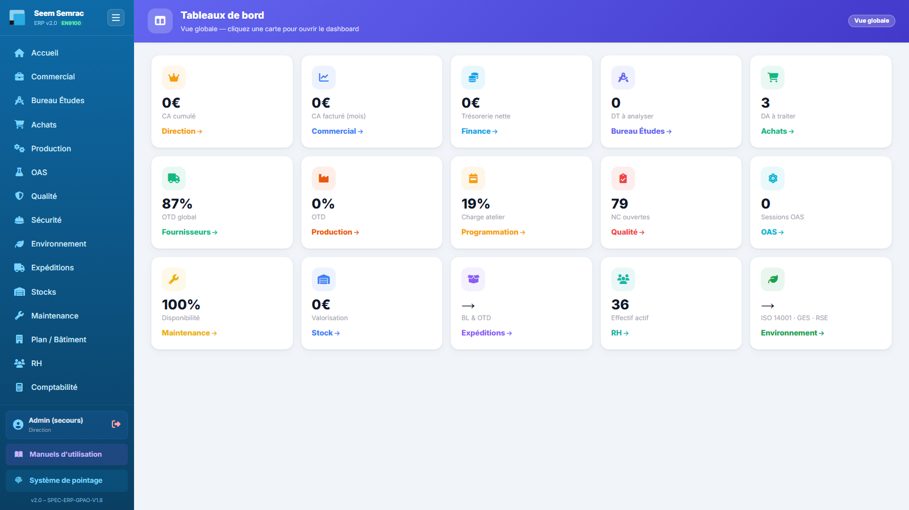
Vue d'ensemble — une carte par dashboard ; le gros chiffre est le KPI phare du service, la flèche ouvre le tableau de bord détaillé.
La barre de filtres, commune aux quinze dashboards
Dès que vous ouvrez un dashboard, une barre blanche reste collée en haut de l'écran pendant que vous faites défiler la page. Elle contient, de gauche à droite : les six boutons de période, les dates personnalisées (si période « Perso »), le choix du site, éventuellement un champ contextuel (client, machine ou fournisseur), le bouton de comparaison vs N-1, puis, à droite, Réinit. et Exporter.
Bouton
Période couverte
Quand l'utiliser
Ce mois (par défaut)
Du 1er du mois en cours à aujourd'hui.
Point de situation quotidien / hebdomadaire.
Mois -1
Le mois précédent, complet (du 1er au dernier jour).
Bilan du mois écoulé, une fois toutes les saisies faites.
YTD
Du 1er janvier de l'année en cours à aujourd'hui.
Cumul annuel « où en est-on depuis janvier ».
12 mois
Les douze derniers mois glissants, jusqu'à aujourd'hui.
Voir une saisonnalité sans coupure au 1er janvier.
Année
Année civile entière (1er janvier → 31 décembre).
Comparaison d'années pleines, revue annuelle.
Perso
Deux champs de date apparaissent : début → fin, à votre main.
Une campagne, un chantier, un audit sur une fenêtre précise.
Contrôle
Choix
Ce que ça change
Où on le trouve
Site
Tous sites (défaut) · Seem · Semrac
Ne garde que les lignes rattachées au site choisi.
Les quinze dashboards.
Client…
Champ avec liste de suggestions, alimentée par les clients réellement présents dans les données de la page.
Restreint tous les indicateurs à ce client.
Direction, Commercial, Finance, Bureau Études, Production, Programmation, Qualité, Expéditions.
Fournisseur…
Champ avec liste de suggestions (fournisseurs des BC, des factures et des DA).
Restreint les achats et les retards à ce fournisseur.
Achats.
Machine…
Champ avec liste de suggestions (parc machines).
Restreint disponibilité, MTBF/MTTR, OM et OPEX à cette machine.
Maintenance.
vs N-1
Bouton bascule (violet quand il est actif)
Ajoute sur les graphes une courbe grise en pointillé : la même mesure, un an plus tôt.
Les quinze dashboards (sur les graphes qui ont une série mensuelle).
Réinit.
Lien rouge, n'apparaît que si un filtre est actif
Remet tout à zéro : « Ce mois », tous sites, aucun client/machine/fournisseur, comparaison désactivée.
Les quinze dashboards.
Exporter
Bouton sombre avec l'icône PDF
Ouvre un nouvel onglet en version imprimable : sidebar et barre de filtres masquées, mise en page A4 paysage, et la fenêtre d'impression s'ouvre seule une fois les graphes dessinés.
Les quinze dashboards.
Lire une tuile KPI
Toutes les tuiles suivent le même dessin : une icône, la valeur, le libellé, puis une ligne grise de contexte (le cumul, le nombre d'éléments comptés…). Selon l'indicateur s'y ajoutent :
Un badge de tendance en haut à droite : ▲ +x % par rapport à la période précédente, ▼ -x % si la valeur recule.
Une mini-courbe (sparkline) sous la valeur : l'évolution mois par mois de la même mesure.
Une ligne d'objectif avec une pastille de couleur : atteint (vert), à surveiller (orange, entre le seuil d'alerte et la cible), sous l'objectif (rouge). Les cibles se règlent dans Réglages › Objectifs / Cibles KPI ; si rien n'y est saisi, l'ERP applique ses valeurs par défaut (OTD 95 %, OTK 92 %, marge 25 %, DSO 45 j, taux de NC ≤ 2 %, Cpk 1,33, disponibilité machines 90 %, absentéisme ≤ 4 %, rotation de stock 6…).
Certaines tuiles sont cliquables : elles ouvrent la liste correspondante en conservant vos filtres. C'est le « drill-down ».
Commercial → Taux conversion ouvre la liste des offres · Carnet de commandes ouvre la liste des DT.
Bureau Études → DT à analyser ouvre la liste des DT.
Achats → DA à traiter ouvre la liste des demandes d'achat.
Programmation → BDT actifs et Production → Avancement BDT ouvrent la liste des bons de travail.
Qualité → NC ouvertes ouvre la liste des non-conformités.
RH → Habilitations ouvre la page Compétences.
Pas à pas — analyser une période puis la partager
Depuis la sidebar, ouvrez Tableaux de bord, puis cliquez la carte du service qui vous concerne.
Choisissez la période : par exemple Mois -1 pour le bilan du mois écoulé, ou Perso puis les deux dates si vous visez une fenêtre précise.
Si besoin, restreignez avec Site (Seem ou Semrac) et le champ contextuel (client, fournisseur ou machine selon la page).
Activez vs N-1 : les graphes affichent en pointillé gris la même période l'an dernier — c'est ce qui transforme un chiffre en tendance.
Cliquez une tuile KPI pour descendre dans le détail : vous arrivez sur la liste correspondante, déjà filtrée comme le dashboard.
Pour diffuser l'analyse, cliquez Exporter : un onglet s'ouvre en version imprimable et propose l'impression ou l'enregistrement en PDF.
Pour revenir à l'état d'origine, cliquez Réinit.
Règles & points d'attention
Vos filtres sont dans l'adresse de la page : vous pouvez mettre une vue filtrée en favori ou en copier le lien pour un collègue — il verra exactement la même chose (s'il a les droits de lecture du service).
Le hub, lui, n'a pas de barre de filtres : il montre toujours la situation du moment.
L'accès est calqué sur les droits de lecture : un profil qui ne lit pas la comptabilité n'ouvre pas le Dashboard Finance, un profil sans lecture RH n'ouvre pas le Dashboard RH.
Aucun chiffre n'est inventé : quand une table est vide, l'ERP affiche 0, un tiret — ou un message du type « Aucune donnée sur la période ». Ce n'est pas une panne, c'est une saisie qui manque dans le service source.
Le filtre Site est tolérant. Il n'écarte une ligne que si celle-ci porte réellement un site. Les données qui n'ont pas de rattachement Seem/Semrac (bons de livraison, relevés OAS, ordres de maintenance…) restent affichées même quand vous choisissez un site : c'est volontaire, pour ne pas faire disparaître des informations en donnant l'illusion d'un périmètre propre.
Attention : un dashboard ne corrige rien. S'il affiche un indicateur faux, la cause est toujours dans la saisie amont (une date de livraison non renseignée, un BDT jamais soldé, une facture au mauvais statut). Corrigez à la source : le dashboard suivra à la prochaine ouverture.
Astuce : les mesures « instantanées » (stock, retards, backlog, quarantaines) ne dépendent pas de la période choisie — elles décrivent l'état d'aujourd'hui. Seules les séries mensuelles et les cumuls suivent la période.
2
Dashboard Direction
À quoi ça sert. C'est la vision consolidée de l'entreprise : commerce, finance, production, qualité, RH et maintenance sur un même écran, complétés par le carnet à venir (le CA déjà vendu mais pas encore livré) et par le suivi objectifs vs réel. On l'ouvre pour la revue de direction, la préparation d'un comité, ou simplement pour savoir ce qui brûle aujourd'hui.
Ce que vous voyez
Six tuiles en haut : CA facturé (mois) avec le cumul et la tendance, Marge brute, OTD global avec le lead time, NC actives (dont 8D et taux de NC), DSO avec l'encours clients, Dispo machines avec l'absentéisme.
CA vs Charges (k€) — deux courbes mensuelles, plus la courbe N-1 en pointillé si la comparaison est active.
Jalons critiques — la liste des vrais points durs du moment, chacun avec une flèche qui mène droit au bon écran : NC critiques ou bloquantes, impayés en retard, ruptures de stock, congés en attente de validation, audits à préparer.
Section Chiffre d'affaires prévisionnel : Carnet total à venir, CA programmé sur 6 mois, À livrer en retard, Au-delà de 6 mois ; puis le CA programmé par mois de livraison (barres Seem / Semrac empilées) et son détail mensuel en euros.
Section Objectifs vs Réel : quatre jauges « bullet » (OTD livraison, marge brute, disponibilité machines, absentéisme) où le trait noir marque la cible ; à côté, la répartition du CA par client.
Quatre cartes de synthèse en bas : Qualité, RH, Stock & Achats, et Accès rapide (Finance, Stock, Fournisseurs, Validations, Objectifs KPI).
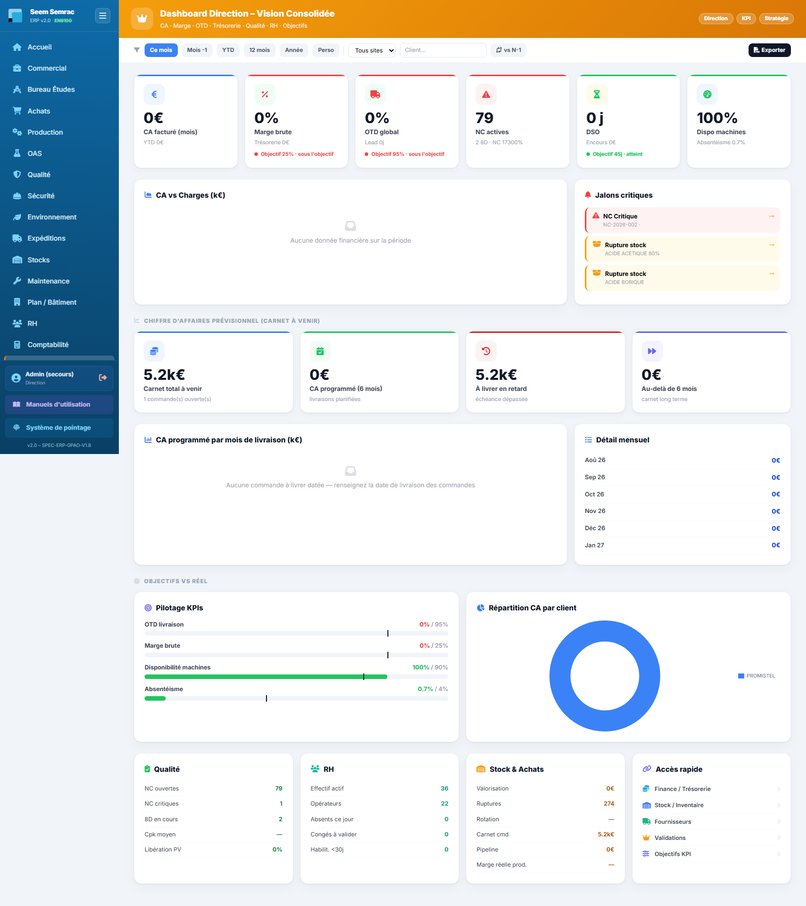
Dashboard Direction — les six tuiles donnent le pouls ; à droite, les « Jalons critiques » listent ce qui doit être traité aujourd'hui.
Pas à pas — préparer la revue de direction
Sélectionnez YTD (ou Année pour une revue annuelle) et activez vs N-1.
Commentez les six tuiles : la pastille de couleur sous chacune dit immédiatement si l'objectif est atteint, à surveiller, ou manqué.
Descendez sur Objectifs vs Réel : les quatre bullets montrent l'écart à la cible. Si une cible ne correspond plus à la réalité de l'entreprise, ouvrez Objectifs KPI depuis la carte Accès rapide et corrigez-la.
Passez au carnet à venir : « À livrer en retard » et « CA programmé (6 mois) » indiquent si la charge vendue est tenable.
Traitez les Jalons critiques un par un en cliquant la flèche de chaque ligne (NC, impayés, ruptures, congés, audits).
Cliquez Exporter pour joindre l'état au compte rendu.
Règles & points d'attention
Le graphe du CA programmé ne peut se remplir que si les commandes portent une date de livraison : sans elle, le message « renseignez la date de livraison des commandes » s'affiche à la place.
Les jalons ne sont pas une liste de tâches à cocher : ce sont des sondes automatiques. Un jalon disparaît quand la donnée qui l'a déclenché est traitée dans son service.
Les cartes Maintenance et RH de cette page donnent l'état global du parc et de l'effectif, indépendamment du client sélectionné.
Astuce : « Marge réelle prod. » (carte Stock & Achats) ne s'affiche que pour les commandes dont la marge a été recalculée au soldage — c'est le meilleur juge de paix entre le chiffrage du BE et la réalité de l'atelier.
3
Dashboard Commercial
À quoi ça sert. Il suit le cycle de vente de bout en bout : ce qui est facturé, ce qui est proposé et attend une réponse, ce qui est signé mais pas encore livré, et sur quels clients repose le chiffre. C'est l'écran du point commercial hebdomadaire.
Ce que vous voyez
CA facturé sur la période, avec le cumul, le badge de tendance et la mini-courbe mensuelle.
Taux conversion — offres gagnées / offres envoyées, avec l'objectif (30 % par défaut) ; la tuile ouvre la liste des offres.
Pipeline en attente — la valeur des offres encore sans réponse, et leur nombre.
Carnet de commandes — le montant des commandes non soldées, et le panier moyen ; la tuile ouvre la liste des DT.
Commandes Seem vs Semrac (k€) — barres mensuelles par site (+ total N-1 en pointillé si la comparaison est active).
Concentration clients — anneau des principaux clients, titre rappelant la part du premier, et un Pareto avec le pourcentage cumulé.
DT en cours — les six premières, avec un liseré de couleur selon la priorité (rouge = critique, orange = urgent, vert = normal) et un lien « Voir toutes les DT ».
Offres en attente réponse — numéro d'affaire, client, montant et date d'offre, avec un lien vers la liste complète.
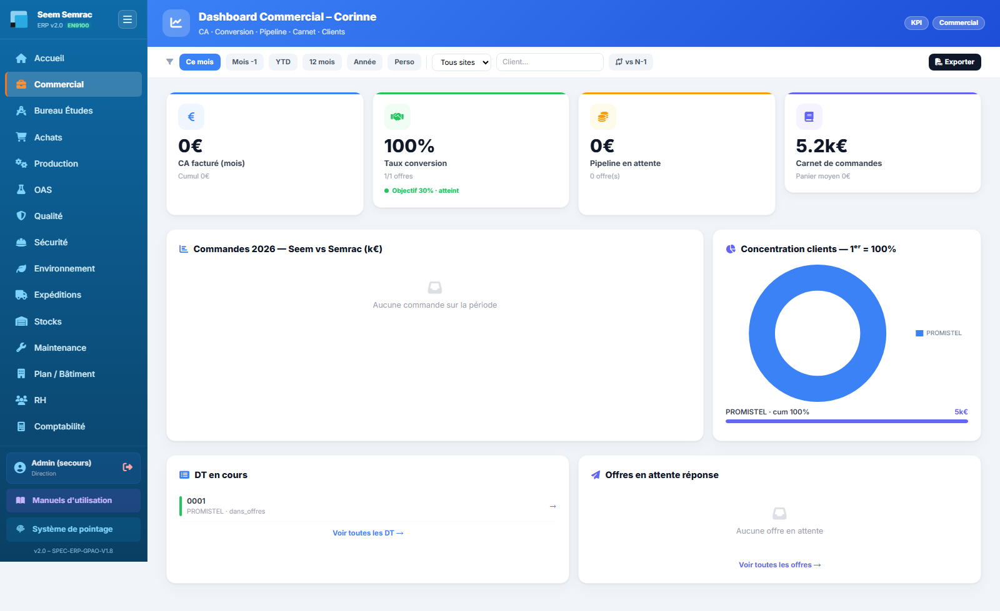
Dashboard Commercial — CA, conversion, pipeline et carnet en haut ; en dessous, la répartition Seem/Semrac et la concentration clients.
Pas à pas — relancer le pipeline
Laissez la période sur Ce mois et regardez la tuile Pipeline en attente : c'est l'argent qui dort.
Dans la carte Offres en attente réponse, repérez les offres dont la date est la plus ancienne : ce sont les relances prioritaires.
Cliquez « Voir toutes les offres » pour ouvrir la liste et traiter chaque offre dans le service Commercial.
Après relance, revenez au dashboard : le taux de conversion se met à jour dès qu'une offre passe en acceptée.
Règles & points d'attention
Une offre en brouillon n'est pas comptée comme envoyée : elle ne pèse ni sur le taux de conversion ni sur le pipeline.
Le carnet de commandes additionne les commandes ouvertes ; une commande soldée en sort automatiquement.
Le CA vient des factures client, pas des commandes : un mois sans facturation affiche zéro même si l'atelier a produit.
Astuce : une concentration élevée (le premier client au-delà de 40 % du carnet) est un risque commercial ; le Pareto sous l'anneau vous dit combien de clients font 80 % du chiffre.
4
Dashboard Finance
À quoi ça sert. C'est le tableau de bord de la trésorerie et de la rentabilité : ce qui est facturé, ce qui est dépensé, ce qui est réellement encaissé, et ce que les clients doivent encore. On l'ouvre avant un point banque, avant une campagne de relance, ou pour vérifier que la marge tient.
Ce que vous voyez
CA HT de la période (avec la marge en euros et la mini-courbe), Taux de marge (CA − charges, objectif 25 %), Trésorerie nette (encaissé − décaissé, en vert si positive, en rouge sinon), DSO en jours avec l'encours clients.
CA vs Charges (HT) — deux courbes mensuelles (+ CA N-1 en pointillé).
Top clients (CA HT) — barres classées.
Encaissements vs Décaissements (TTC) — barres vertes et rouges par mois, à partir des dates de paiement.
Balance âgée — deux blocs symétriques (créances clients puis dettes fournisseurs) découpés en 0–30 j, 30–60 j, 60–90 j et +90 j, suivis des Impayés en retard et du DPO fournisseurs.
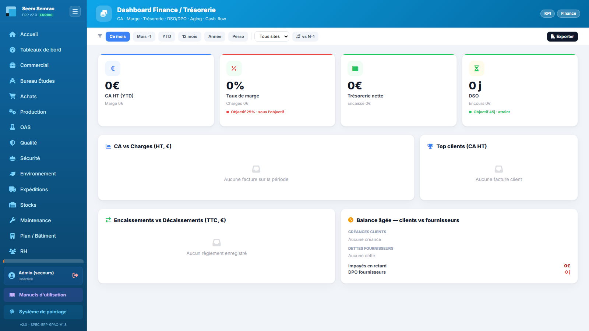
Dashboard Finance — la balance âgée en bas à droite : plus les barres glissent vers « +90 j », plus le recouvrement est en retard.
Pas à pas — préparer une campagne de relance
Choisissez YTD pour raisonner sur l'ensemble de l'année.
Lisez le DSO : au-delà de la cible (45 jours par défaut), la pastille passe à l'orange puis au rouge.
Dans la Balance âgée, repérez le poids des tranches 60–90 j et +90 j, et le montant des impayés en retard.
Filtrez sur un client pour isoler son encours avant de l'appeler.
Traitez les règlements dans le service Comptabilité : le passage d'une facture au statut « payée » alimente immédiatement la trésorerie et les encaissements.
Règles & points d'attention
La trésorerie affichée n'est pas un solde bancaire : c'est la différence entre les factures client encaissées et les factures fournisseur payées sur la période.
Le DSO se lit « nombre de jours de chiffre d'affaires immobilisés dans les créances » ; le DPO est son équivalent côté fournisseurs (une valeur plus haute y est plutôt favorable à la trésorerie).
Les brouillons et les factures annulées sont exclus des encours et de la balance âgée.
Attention : sans date d'échéance sur les factures, la balance âgée reste vide. Sans date de paiement, le graphe encaissements/décaissements reste vide alors même que la facture est marquée payée.
5
Dashboard Bureau Études
À quoi ça sert. Il mesure le travail du bureau d'études : le flux de demandes de travaux à analyser, la qualité du chiffrage (coût de revient unitaire, structure de coût, marge) et la complétude des nomenclatures. C'est l'écran qui dit si le BE est en retard sur les analyses et si les prix tiennent la route.
Ce que vous voyez
DT à analyser (avec le nombre total de DT ouvertes) — la tuile ouvre la liste des DT ; DT analysées en pourcentage ; CRU moyen en euros par pièce avec le nombre de nomenclatures chiffrées ; Marge brute moyenne avec le détail Seem / Semrac (objectif 25 %).
Structure de coût moyenne du CRU — une barre empilée horizontale décomposant matière, main d'œuvre, machine et sous-traitance, avec les montants rappelés en dessous.
Corrélation CRU ↔ marge — un nuage de points (axe X : coût de revient par pièce, axe Y : marge en %) : il montre si l'on marge moins sur les pièces chères.
Pièces les plus coûteuses — classement des CRU par pièce.
Complétude des nomenclatures — un pourcentage et une barre : une nomenclature est dite complète quand elle a une gamme, une matière et le statut validée.
DT entrantes par mois (+ N-1 en pointillé) et la file d'attente des DT à traiter, avec la priorité en liseré, le site et le délai.
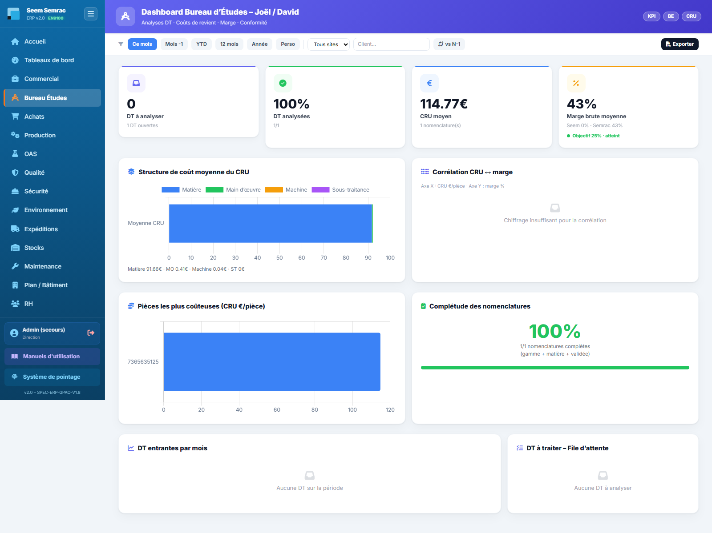
Dashboard Bureau Études — la structure de coût et la complétude des nomenclatures disent où le chiffrage est solide et où il est encore approximatif.
Pas à pas — assainir le chiffrage
Regardez la Complétude des nomenclatures : chaque point manquant (gamme, matière ou validation) fausse le CRU.
Ouvrez Pièces les plus coûteuses et vérifiez que les CRU les plus élevés correspondent bien à des pièces réellement complexes.
Dans le nuage CRU ↔ marge, repérez les points en bas à droite : pièces chères à faible marge — ce sont les prix à renégocier ou les gammes à revoir.
Traitez la file d'attente en commençant par les priorités critiques (liseré rouge) : la tuile « DT à analyser » ouvre la liste complète.
Règles & points d'attention
Une DT est comptée comme « analysée » dès qu'un analyste lui est affecté ; celles sans analyste rejoignent la file d'attente.
La marge affichée provient des marges saisies pièce par pièce lors de l'analyse : sans coefficient renseigné, la tuile affiche un tiret.
Le filtre Site agit ici sur l'entité de la nomenclature (Seem / Semrac).
Astuce : la structure de coût est la réponse la plus rapide à « pourquoi cette pièce coûte-t-elle si cher ? » — si la sous-traitance domine, la piste d'économie n'est pas dans l'atelier.
6
Dashboard Achats
À quoi ça sert. Il pilote les approvisionnements : les demandes d'achat en attente, les bons de commande en cours, les retards de livraison fournisseur et la dépense engagée. C'est l'écran du quotidien de l'acheteur.
Ce que vous voyez
DA à traiter avec le nombre de demandes critiques — la tuile ouvre la liste des DA ; BC en cours sur le total ; Retards fournisseur (vert s'il n'y en a aucun, rouge sinon) ; Achats de la période avec le cumul et la mini-courbe.
Dépenses achats mensuelles — courbe des factures fournisseur HT (+ N-1 en pointillé).
Pareto dépense fournisseur — barres avec le pourcentage cumulé. Le titre précise « (BC engagés) » quand aucune facture n'existe encore sur la période : le calcul bascule alors sur les montants des bons de commande.
Ancienneté des BC en retard — l'argent en retard réparti en 0–30 j, 30–60 j, 60–90 j et +90 j, avec le total.
Répartition des DA par nature — anneau par catégorie de demande.
DA en attente de traitement — six lignes avec le demandeur, l'article, le statut et la priorité.
Performance fournisseurs (OTD) — une jauge de l'OTD global des réceptions plus les six premiers fournisseurs avec leur OTD (vert à partir de 85 %) et leur statut.
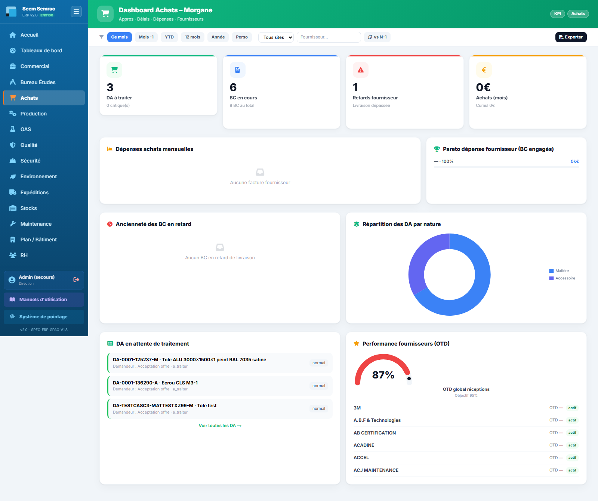
Dashboard Achats — « Retards fournisseur » et « Ancienneté des BC en retard » chiffrent en euros ce que les retards immobilisent.
Pas à pas — traiter la journée d'achats
Ouvrez la page : la tuile DA à traiter donne la charge du jour, dont les critiques.
Cliquez la tuile (ou « Voir toutes les DA ») pour ouvrir la liste et transformer les demandes en bons de commande.
Revenez sur Retards fournisseur et sur l'ancienneté des BC : relancez d'abord les tranches les plus anciennes et les montants les plus lourds.
Filtrez sur un fournisseur pour préparer un point avec lui : dépense, retards et OTD s'ajustent à son périmètre.
Règles & points d'attention
Un BC est « en retard » dès que sa date de livraison est dépassée et qu'il n'est ni reçu ni clôturé.
Les indicateurs de retard et de backlog sont des instantanés : ils ne dépendent pas de la période choisie, seule la dépense la suit.
Le prix ne se saisit jamais sur un BC : il vient des demandes de prix (RFQ). Le dashboard ne fait que consolider ce qui a été engagé.
Astuce : pour un point fournisseur complet (scorecard, NC, concentration), passez au Dashboard Fournisseurs : les deux pages se complètent.
7
Dashboard Fournisseurs
À quoi ça sert. C'est l'évaluation du panel : qui livre à l'heure, qui livre complet, qui coûte cher, qui génère des non-conformités. Il sert à préparer les revues fournisseurs, à décider d'une requalification et à surveiller la dépendance à un fournisseur unique.
Ce que vous voyez
Fournisseurs / ST — nombre total référencé et nombre d'actifs ; OTD global avec le fill rate (quantité reçue / quantité commandée) ; Dépense de la période avec le nombre de NC fournisseur ; Concentration — part du premier fournisseur dans la dépense, affichée en rouge au-delà de 40 %.
Scorecard fournisseurs — le tableau central : Fournisseur, Type (Fourn. ou ST), OTD (vert ≥ 85 %, rouge en dessous), nombre de BC, Dépense, NC, Statut (actif ou inactif).
Dépense par fournisseur — anneau de répartition.
Nuage OTD × dépense — chaque bulle est un fournisseur : X = OTD, Y = dépense, taille = nombre de BC. Le quart en bas à gauche (peu ponctuel, peu de dépense) et surtout le quart en haut à gauche (gros budget, mauvaise ponctualité) sont les zones à traiter.
NC par fournisseur — barres classées.
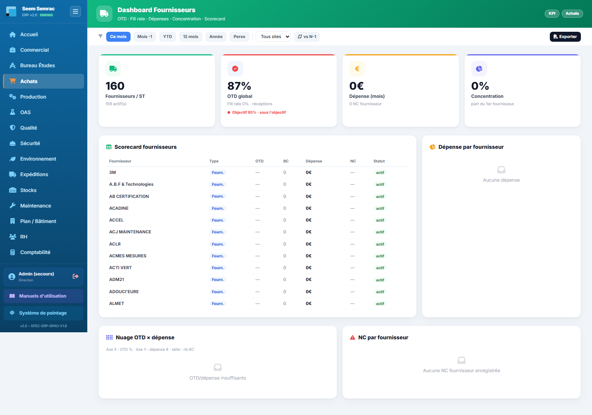
Dashboard Fournisseurs — la scorecard croise ponctualité, volume, dépense et non-conformités : c'est le support de la revue de panel.
Pas à pas — préparer une revue fournisseur
Choisissez 12 mois pour lisser les à-coups d'un mois isolé.
Triez visuellement la scorecard : elle est déjà classée par dépense décroissante, donc les enjeux sont en haut.
Croisez avec le nuage OTD × dépense : une grosse bulle à gauche du graphe = beaucoup d'argent chez un fournisseur peu ponctuel.
Regardez la colonne NC et le graphe « NC par fournisseur » pour objectiver la qualité de la réception.
Exportez la page en PDF : elle constitue la pièce jointe de la revue.
Règles & points d'attention
L'OTD est calculé sur la première date de livraison promise : décaler la date d'un BC déjà en retard ne rattrape pas la note du fournisseur.
Un fournisseur sans BC daté et réceptionné affiche « — » : la note ne s'invente pas.
Le fill rate se calcule sur les quantités commandées et reçues des BC ; il reste à 0 tant que ces quantités ne sont pas saisies.
Attention : une concentration au-delà de 40 % signale une dépendance. C'est une alerte de gestion des risques (rupture, hausse de prix), même si le fournisseur donne entière satisfaction.
8
Dashboard Production
À quoi ça sert. Il mesure la performance de l'atelier : tenue des délais (OTD), tenue des délais et de la conformité (OTK), rythme (takt time), durée de traversée (lead time), reprises, et charge prévisionnelle. C'est l'écran du responsable de production et du point quotidien.
Ce que vous voyez
Cinq tuiles : Avancement BDT (bons soldés / total, la tuile ouvre la liste des BDT), OTD (objectif 95 %), OTK — « à l'heure & conforme » (objectif 92 %), Lead time moyen en jours (commande → livraison), Taux de reprise avec l'en-cours (WIP), objectif 3 %.
Trois jauges (OTD, OTK, Avancement) avec le repère de cible, et la charge par opération des BDT actifs en heures.
Takt time & incidents — takt Seem et takt Semrac en minutes, NC ouvertes et reprises.
Charge atelier prévisionnelle (8 semaines) — barres des heures planifiées, en rouge lorsqu'elles dépassent la ligne noire de capacité ; à côté, une synthèse : capacité par semaine, opérateurs actifs, semaines en surcharge, heures en retard à replanifier, heures au-delà de 8 semaines.
Distribution du lead time (< 7 j / 7–14 j / 14–30 j / 30 j et +) et Productivité — temps alloué vs réel avec l'écart en pourcentage (vert si l'on est sous le temps alloué, rouge si on le dépasse).
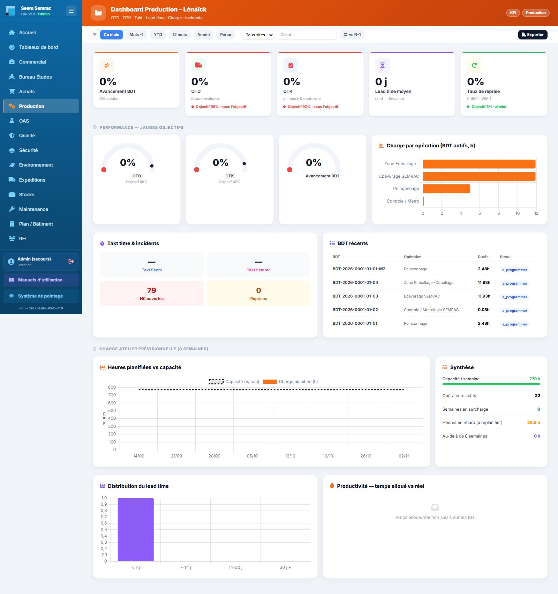
Dashboard Production — les jauges OTD/OTK portent le repère noir de la cible ; plus bas, la charge prévisionnelle signale les semaines en surcharge.
Pas à pas — comprendre un OTK qui décroche
Comparez OTD et OTK : si l'OTD est bon mais l'OTK mauvais, le problème n'est pas le délai mais la conformité.
Regardez la carte Takt time & incidents : le nombre de NC ouvertes et de reprises explique l'écart.
Ouvrez le Dashboard Qualité pour identifier les familles de défauts (Pareto par type et par gravité).
Vérifiez enfin temps alloué vs réel : un écart fortement positif signale des gammes sous-estimées, qui poussent aux reprises et aux retards.
Règles & points d'attention
L'OTD compare la date de livraison réellement constatée (BL) à la date promise ; si l'une des deux manque, la commande n'entre pas dans le calcul.
L'OTK part de l'OTD et le dégrade en fonction des NC critiques ou bloquantes encore ouvertes : il ne peut donc jamais dépasser l'OTD.
La capacité de l'atelier est estimée à 7 heures par opérateur présent ; un opérateur en absence du jour n'est pas compté.
Les heures « en retard (à replanifier) » correspondent à des BDT dont la date prévue est déjà passée : elles ne disparaîtront pas seules.
Astuce : le takt time n'apparaît que si des lots ont été terminés dans le mois de référence ; sans quantité livrée, il affiche « — ».
9
Dashboard Programmation
À quoi ça sert. C'est le tableau de bord de l'ordonnanceur : ce qui reste à programmer, ce qui n'est pas affecté à un opérateur, ce qui n'a pas de date, et si la charge des huit prochaines semaines tient dans la capacité. Il complète le planning unique du service Production.
Ce que vous voyez
BDT actifs avec le nombre restant à affecter (la tuile ouvre la liste des BDT) ; Charge atelier en pourcentage, avec le détail « opérateurs disponibles / total » et « heures planifiées / capacité » — la tuile passe au rouge à partir de 90 % ; Cmd à programmer (commandes ouvertes sans lot ni BDT créé) ; ST en cours (bons de sous-traitance actifs).
Charge prévisionnelle 8 semaines — barres des heures planifiées face à la ligne de capacité, et une synthèse planning (capacité hebdomadaire, opérateurs actifs, semaines en surcharge, heures en retard, heures au-delà de 8 semaines).
Charge par opérateur — aujourd'hui — une barre par opérateur (verte, orange dès 70 %, rouge dès 90 %), un badge Absent pour les absents du jour, et le lien « Ouvrir Gantt → » vers le planning.
Charge par opération (h), Sous-traitance active, Commandes en attente prog. avec le bouton « Ordonnancer → ».
File d'ordonnancement — BDT à traiter — deux compteurs (à affecter / non planifiés) puis la liste des BDT avec leur durée et le badge « à affecter ».
Charge ouverte par site (h) — anneau Seem / Semrac.
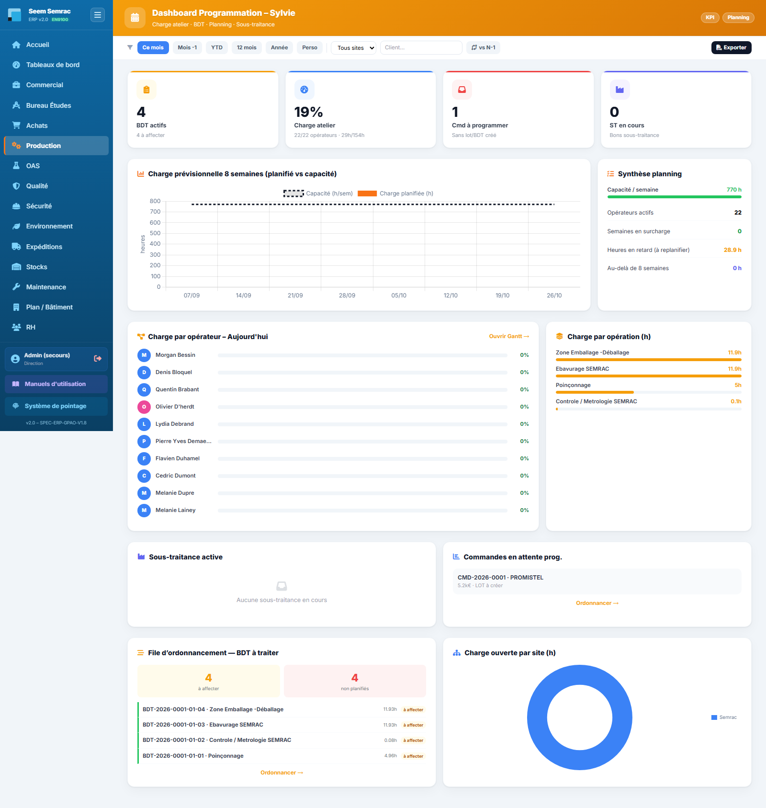
Dashboard Programmation — la charge des huit semaines à venir et la file d'ordonnancement : ce qui n'est ni affecté ni daté est listé noir sur blanc.
Pas à pas — vider la file d'ordonnancement
Lisez la tuile Charge atelier : au-delà de 90 %, toute nouvelle affectation créera du retard.
Ouvrez la carte File d'ordonnancement : le compteur orange donne les BDT sans opérateur, le rouge ceux sans date.
Cliquez « Ordonnancer → » pour ouvrir l'écran de programmation et donner à chaque BDT un poste et une date.
Affectez les opérateurs depuis « Ouvrir Gantt → » en évitant ceux qui sont déjà au rouge et ceux marqués Absent.
Traitez enfin les Commandes en attente prog. : chacune doit donner lieu à un lot puis à ses BDT.
Règles & points d'attention
La charge affichée ici est recalculée sur le périmètre filtré : si vous choisissez le site Seem, la capacité ne compte que les opérateurs de Seem — le chiffre peut donc différer de celui du Dashboard Production.
Une semaine dont la barre dépasse la ligne noire est en surcharge : il faut décaler, sous-traiter ou renforcer.
Les BDT sans date prévue n'apparaissent dans aucune semaine du graphe : la file d'ordonnancement est le seul endroit où on les voit.
Astuce : « Cmd à programmer » à zéro et file d'ordonnancement vide, c'est le signe que le carnet est entièrement traduit en travail planifié — l'objectif de fin de journée pour l'ordonnancement.
10
Dashboard Qualité
À quoi ça sert. Il donne l'état de la conformité : non-conformités ouvertes et leur ancienneté, taux de NC, capabilité des cotes (Cp/Cpk, PPM), libération des PV, quarantaines et 8D, plus le rappel des ECME à étalonner et des audits à planifier. C'est le support de la revue qualité et de la préparation d'audit.
Ce que vous voyez
Cinq tuiles : NC ouvertes avec le nombre de critiques (la tuile ouvre la liste des NC), Taux de NC (NC rapportées aux lots, cible ≤ 2 %), Cpk moyen avec le nombre de contrôles et le PPM (cible 1,33), Libération PV en pourcentage (cible 95 %), Quarantaines avec la durée moyenne et le nombre de 8D en cours.
Non-conformités par mois — courbe (+ N-1 en pointillé).
Une jauge Conformité cotes avec le rappel Cp · Cpk · PPM (ou un message si aucun contrôle de cote n'a été saisi).
NC actives à traiter — six NC avec type, gravité, statut et date ; le fond et le liseré passent au rouge pour les gravités critiques et bloquantes.
Contrôles & audits — deux compteurs : ECME à étalonner (sur le total d'instruments) et Audits à planifier.
Section Analyse des non-conformités : Pareto NC par type, NC par gravité (anneau) et Ancienneté des NC ouvertes (0–30 j, 30–60 j, 60–90 j, 90 j et +).
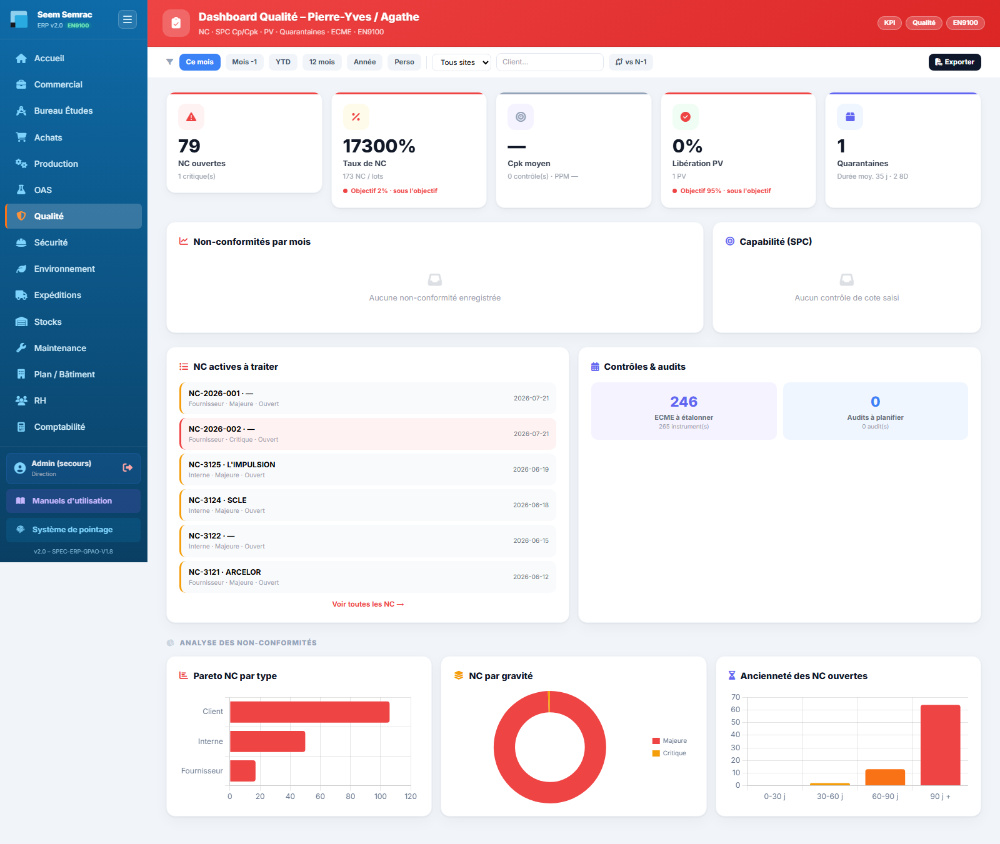
Dashboard Qualité — l'ancienneté des NC ouvertes (en bas à droite) révèle les dossiers oubliés, souvent invisibles dans le compteur global.
Pas à pas — la revue qualité hebdomadaire
Période Ce mois, comparaison vs N-1 activée : la courbe des NC dit si la situation s'améliore ou se dégrade d'une année sur l'autre.
Traitez d'abord les NC critiques et bloquantes de la carte « NC actives » : elles bloquent aussi les expéditions des lots concernés.
Regardez l'ancienneté des NC ouvertes : toute barre à droite (60 j et plus) est un dossier qui traîne.
Utilisez le Pareto par type pour choisir la famille de défauts à attaquer en action de fond.
Vérifiez les compteurs ECME à étalonner et Audits à planifier avant toute échéance de certification.
Règles & points d'attention
Le taux de NC rapporte le nombre de NC au nombre de lots : sans lots enregistrés, il reste à 0 même s'il existe des NC.
Le Cpk est agrégé à partir des contrôles de cotes saisis ; il faut au minimum deux mesures exploitables pour qu'il s'affiche.
La libération PV compte les PV qui ne sont ni bloqués ni refusés : elle chute dès qu'un contrôle final reste en attente de décision.
Le filtre Site s'applique ici à l'entité de la NC (Seem / Semrac).
Astuce : ce dashboard est la vue « chiffres » ; l'onglet Dashboard Qualité du service Qualité propose en plus le Pareto multi-axes et la « Conformité vive » des audits. Les deux se complètent.
11
Dashboard OAS
À quoi ça sert. Il surveille l'atelier d'oxydation anodique : le volume de sessions traitées, la conformité des bains (concentration, température, pH) et l'autosurveillance des rejets d'eau. C'est à la fois un outil de production et une pièce de preuve pour l'environnement.
Ce que vous voyez
Sessions OAS sur la période et au total ; Conformité bains en pourcentage avec le nombre de relevés et, le cas échéant, le nombre de relevés non conformes — la mini-courbe suit le pH du bain principal ; Conformité sessions avec le nombre de sessions terminées ; Durée moyenne de traitement en minutes.
État des bains — derniers paramètres — une carte par bain avec sa concentration (g/L), sa température et son pH, sur fond vert avec la pastille OK ou sur fond orange avec ⚠.
Sessions par mois — barres (+ N-1 en pointillé).
Relevés d'eau (autosurveillance rejets) — tableau Date, Volume, pH, Chlore, Turbidité et une colonne Conforme (✓ ou ✗ NC).
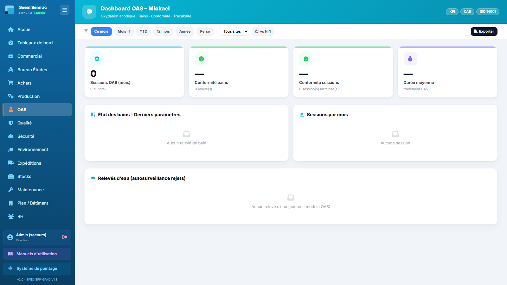
Dashboard OAS — l'état des bains affiche le dernier relevé de chaque bain : c'est la photo de l'instant, pas une moyenne.
Pas à pas — contrôle de début de journée
Ouvrez le dashboard et lisez État des bains : un bain sur fond orange signale un dernier relevé non conforme.
Retournez dans le service OAS pour refaire le relevé et corriger le bain avant de lancer les balancelles.
Contrôlez la tuile Conformité sessions : elle compare les sessions terminées conformes au total des sessions terminées.
Vérifiez le tableau des relevés d'eau : toute ligne « ✗ NC » doit être justifiée dans le suivi environnemental.
Règles & points d'attention
La conformité des bains et celle des sessions sont deux choses différentes : la première vient des relevés de bain, la seconde du résultat des balancelles terminées.
Les bains affichent l'état instantané (dernier relevé connu par bain) : ils ne bougent pas quand vous changez la période.
Un relevé de bain non conforme déclenche une non-conformité côté Qualité : le suivi ne s'arrête pas à ce dashboard.
Astuce : exportez cette page en PDF avant une visite d'inspection : elle rassemble sur une feuille l'état des bains et l'autosurveillance des rejets.
12
Dashboard Maintenance
À quoi ça sert. Il donne la santé du parc machines : disponibilité, pannes en cours, MTBF/MTTR, part du préventif face au correctif, coût de maintenance et OPEX par machine. C'est le seul dashboard qui contient aussi une action : générer les ordres de maintenance préventifs échus.
Ce que vous voyez
Machines en panne avec le nombre d'OM ouverts ; Disponibilité parc avec l'OEE et le nombre de machines (objectif 90 %) ; MTTR moyen en heures avec le MTBF ; Ratio préventif avec le décompte préventif / correctif et, si l'OPEX est renseigné, le coût horaire réel.
Une jauge de disponibilité, un anneau Préventif vs Correctif, et la liste Statut machines (opérationnel, maintenance, autre état).
Prochaines maintenances — les échéances préventives et les OM datés, triés par date, précédés du bouton « Générer les OM préventifs dus ».
Backlog OM par âge — 0–7 j, 8–30 j, 31–90 j, plus de 90 j, suivi des OM ouverts les plus anciens.
Coût de maintenance mensuel (+ N-1 en pointillé), OPEX par machine avec le total, les heures productives et le coût horaire réel, et le tableau MTBF / MTTR par machine (Machine, MTBF, MTTR, Dispo, Pannes) classé du plus long temps de réparation au plus court.
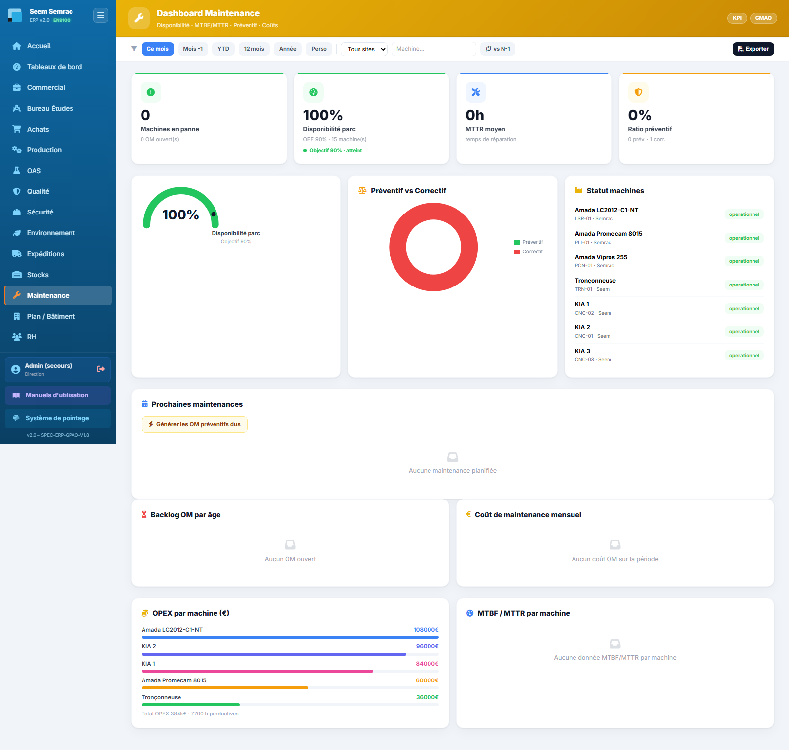
Dashboard Maintenance — le bouton jaune « Générer les OM préventifs dus » et, plus bas, le backlog des OM par âge.
Pas à pas — générer les préventifs échus
Ouvrez la carte Prochaines maintenances et vérifiez les échéances listées.
Cliquez « Générer les OM préventifs dus ».
Un message confirme le nombre d'ordres créés (« n OM préventif(s) généré(s). »), puis la page se recharge.
Les ordres créés sont désormais dans le service Maintenance : affectez-les et planifiez-les comme des OM ordinaires.
Contrôlez ensuite le Ratio préventif : il doit remonter à mesure que le préventif est réellement exécuté.
Règles & points d'attention
Le filtre Machine restreint tout l'écran (disponibilité, OM, MTBF/MTTR, OPEX) à un seul équipement : idéal pour instruire une machine à problèmes.
La disponibilité provient des relevés MTBF quand ils existent ; à défaut, elle est estimée par la part de machines à l'état « opérationnel ».
L'OPEX par machine reste vide tant que les consommations et achats rattachés aux machines ne sont pas saisis — le coût horaire réel n'apparaît alors pas non plus.
Le backlog se calcule depuis la date de signalement : un OM ouvert sans date de signalement n'y figure pas.
Attention : « Générer les OM préventifs dus » crée réellement des ordres de maintenance dans l'ERP. Ne cliquez pas « pour voir » : lancez-le quand vous êtes prêt à les traiter.
13
Dashboard Stock
À quoi ça sert. Il répond à trois questions : combien vaut le stock, qu'est-ce qui manque, et qu'est-ce qui dort. Il fournit aussi le classement ABC (où concentrer les efforts de gestion) et des suggestions de réapprovisionnement prêtes à commander.
Ce que vous voyez
Valorisation stock avec le nombre de références ; Ruptures (articles à zéro) et le nombre d'articles sous le mini ; Rotation stock avec la couverture moyenne en mois (objectif 6) ; Dead stock (> 6 mois) avec la valeur immobilisée.
Flux entrées / sorties — barres mensuelles vertes et rouges (+ sorties N-1 en pointillé).
Valeur par activité — anneau.
Classement ABC (Pareto valeur) — barres de valeur, courbe du pourcentage cumulé et trois pavés récapitulatifs : A (jusqu'à 80 % de la valeur), B (80 à 95 %), C (le reste), chacun avec son nombre de références et son montant.
Suggestions de réappro — tableau Référence, Stock, Point de commande, À commander, avec un badge AUTO pour les articles en réapprovisionnement automatique, et un lien « Gérer le stock ».
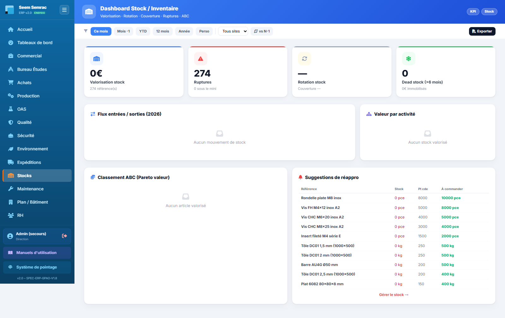
Dashboard Stock — le classement ABC et les suggestions de réappro : la liste de courses est déjà triée par urgence.
Pas à pas — lancer un réapprovisionnement
Contrôlez les tuiles Ruptures et « sous le mini » : ce sont les urgences.
Descendez sur Suggestions de réappro : les lignes sont classées des plus critiques (stock le plus loin sous le point de commande) aux moins urgentes.
Notez la colonne À commander : c'est la quantité calculée (quantité de commande paramétrée, ou l'écart au stock maxi).
Cliquez « Gérer le stock → » pour créer les demandes d'achat correspondantes dans le service Stock, qui alimenteront ensuite les Achats.
Surveillez enfin le Dead stock : ce sont des références sans entrée depuis plus de six mois — candidates au déstockage plutôt qu'au réachat.
Règles & points d'attention
Le stock est un niveau instantané : le filtre Site s'applique, mais la période choisie n'agit que sur le graphe des flux mensuels.
La rotation et la couverture reposent sur la consommation mensuelle renseignée sur l'article : sans elle, ces indicateurs affichent « — ».
La valorisation utilise le prix d'achat HT de la fiche article ; un prix manquant sous-évalue le stock.
Les articles désactivés sont exclus de tous les calculs.
Astuce : concentrez les inventaires tournants et les négociations d'achat sur la classe A : peu de références, l'essentiel de la valeur.
14
Dashboard Expéditions
À quoi ça sert. Il prépare et contrôle les départs : quelles commandes sont prêtes à partir, lesquelles sont bloquées par la qualité, combien de bons de livraison ont été émis, et si les délais promis aux clients sont tenus.
Ce que vous voyez
Cmd à expédier — commandes dont la production est soldée et la qualité au vert ; la ligne de contexte indique « Production soldée + qualité OK », ou passe en rouge avec le nombre de commandes bloquées qualité.
OTD livraisons en pourcentage avec le nombre de commandes évaluées (objectif 95 %).
BL clients (total) et le nombre émis sur la période.
Retards en cours — commandes ouvertes marquées en retard.
Commandes en attente d'expédition — client, montant, date de livraison prévue et statut, avec le lien « Voir tous les BL ».
BL clients par mois (+ N-1 en pointillé), Volume expédié (qté) par mois et Répartition par transporteur (anneau).
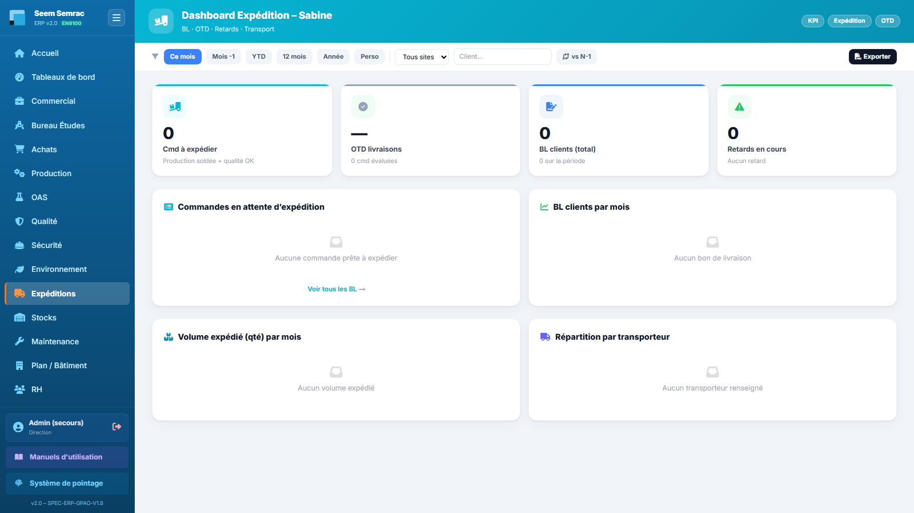
Dashboard Expéditions — la première tuile distingue ce qui est réellement expédiable de ce que la qualité retient.
Pas à pas — organiser les départs du jour
Lisez la tuile Cmd à expédier : si elle est rouge, des commandes prêtes sont retenues par une non-conformité.
Parcourez Commandes en attente d'expédition et triez mentalement par date de livraison promise.
Cliquez « Voir tous les BL → » pour créer les bons de livraison dans le service Expéditions.
Pour les commandes bloquées, passez par le Dashboard Qualité ou la liste des NC : la levée de la NC débloque l'expédition.
En fin de mois, contrôlez l'OTD livraisons et le volume expédié pour la revue avec le commerce.
Règles & points d'attention
Une commande n'est proposée à l'expédition que si tous ses bons de travail sont soldés.
Une NC critique ou bloquante encore ouverte sur un lot de la commande la fait basculer en « bloquée qualité » : c'est la porte qualité, elle est volontaire.
Le compteur « BL clients » ne prend que les livraisons clients : les bons de réception et les bons de sous-traitance en sont exclus.
L'OTD affiché est le même que celui du Dashboard Production : une seule définition pour toute l'entreprise.
Attention : la répartition par transporteur reste vide tant que le champ transport n'est pas renseigné sur les BL — c'est une saisie à ne pas négliger si vous voulez négocier avec vos transporteurs.
15
Dashboard RH
À quoi ça sert. Il suit l'effectif, les absences, les heures travaillées et surtout les habilitations — le point le plus sensible en aéronautique, où une certification périmée peut interdire une opération. On l'ouvre pour le suivi mensuel et pour anticiper les renouvellements.
Ce que vous voyez
Effectif actif avec le nombre d'opérateurs ; Absences sur la période avec le taux d'absentéisme (cible ≤ 4 %) ; Habilitations ⚠ avec le nombre qui expire sous 30 jours (la tuile ouvre la page Compétences) ; Heures de la période dont les heures supplémentaires.
Effectif par entité et Répartition par type de contrat — deux anneaux.
Tendance absentéisme — courbe du nombre d'absences par mois (+ N-1 en pointillé).
Ancienneté des habilitations — quatre pavés : Déjà expiré, < 30 j, 30–60 j, 60–90 j.
Présence opérateurs — aujourd'hui — badge Présent ou Absent par opérateur.
Habilitations / Certifications — salarié, intitulé et statut, avec le lien « Gérer les compétences ».
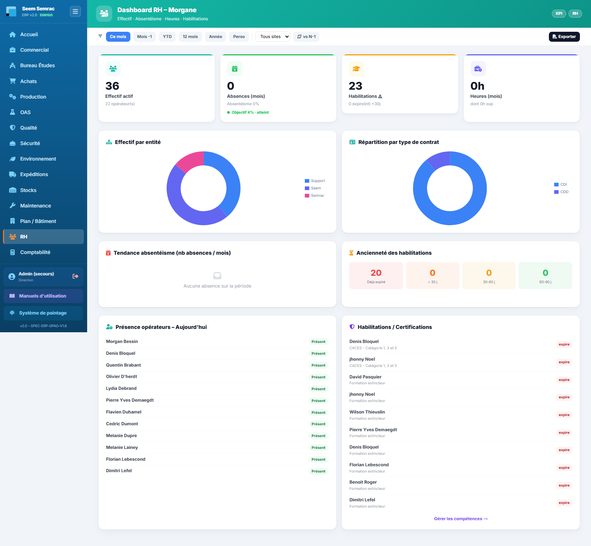
Dashboard RH — les quatre pavés d'ancienneté des habilitations donnent le calendrier des renouvellements à lancer.
Pas à pas — anticiper les renouvellements d'habilitation
Regardez le pavé Déjà expiré : ces habilitations ne couvrent plus rien, les opérations associées doivent être réaffectées immédiatement.
Traitez ensuite < 30 j, puis 30–60 j : ce sont les formations à programmer maintenant.
Cliquez la tuile Habilitations ou le lien « Gérer les compétences → » pour ouvrir la page des compétences et mettre à jour les dates.
Contrôlez enfin la Présence opérateurs du jour avant de valider le planning d'atelier.
Règles & points d'attention
Le taux d'absentéisme rapporte les jours d'absence de la période à l'effectif multiplié par les jours ouvrés : il n'a de sens que si les absences sont saisies au fil de l'eau.
Les heures et les heures supplémentaires proviennent des pointages ; sans pointage, les tuiles restent à zéro.
Le filtre Site agit sur l'entité du salarié ; absences, pointages et certifications, qui n'ont pas de site propre, ne sont pas écartés.
Ce dashboard est réservé aux profils qui ont la lecture RH.
Astuce : les heures relevées ici sont la base des exports de paie : un écart entre « Heures » et ce que vous attendez signale d'abord un pointage manquant, pas une erreur de calcul.
16
Dashboard Environnement
À quoi ça sert. C'est le tableau de bord du système de management environnemental (ISO 14001) : déchets et filières, rejets, conformité réglementaire et veille, aspects environnementaux significatifs, consommations d'eau et d'énergie, bilan carbone et indicateurs RSE. Il sert au pilotage courant et à la préparation des audits ou des contrôles ICPE.
Ce que vous voyez
Six tuiles : Déchets tracés (dont dangereux) ; Conformité réglementaire en pourcentage des obligations applicables (objectif 98 %) ; Rejets hors VLE — les mesures qui dépassent les valeurs limites ; Aspects significatifs sur le total des aspects recensés ; BSD conformes (bordereaux de suivi des déchets dangereux, objectif 100 %) ; Incidents env. (an) avec les revues ATEX dues, objectif ≤ 3 par an.
Deux jauges (Taux de conformité et Déchets valorisés), l'anneau DD / DND, et trois bullets d'objectifs quantitatifs : déchets dangereux (t/an), déchets non dangereux (t/an), consommation d'eau (m³/an).
Déchets produits par mois (barres empilées dangereux / non dangereux, en kg) et Déchets par filière.
Indicateur de la veille réglementaire — barres groupées par domaine (ICPE, ISO 14001, RSE, ISO 26000, ATEX, Autre) et par état : Conforme, Non conforme, Partiel, À vérifier.
Consommation eau / énergie (deux courbes), Risque chimique — environnement (SEIRICH) (produits classés au niveau 2 et au-delà, avec quantité et pastille de niveau) et Aspects environnementaux par milieu.
Bilan GES par scope (scope 1 direct, scope 2 électricité, scope 3 indirect) avec le total en tCO₂e, et les Postes d'émission.
Veille réglementaire en alerte — le nombre d'obligations à traiter puis leur détail (obligation, domaine, échéance, état) ; Incidents / rejets hors VLE par mois ; et, si des indicateurs RSE sont saisis, un bloc social · environnement · gouvernance avec valeur et cible.
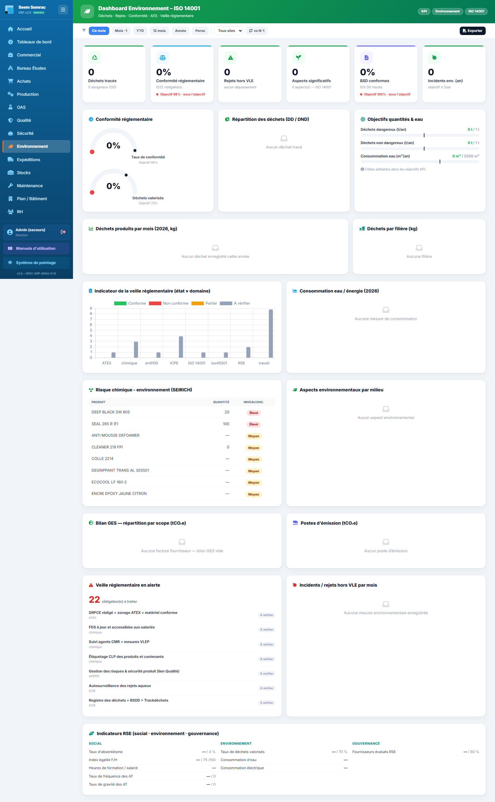
Dashboard Environnement — conformité, déchets et veille réglementaire sur un même écran : la base du dossier ISO 14001.
Pas à pas — préparer un audit environnemental
Choisissez Année pour couvrir l'exercice complet.
Vérifiez la tuile Conformité réglementaire puis ouvrez Veille réglementaire en alerte : chaque ligne est une obligation à régulariser ou à documenter avant l'audit.
Contrôlez BSD conformes : un bordereau manquant sur un déchet dangereux est un écart immédiat.
Comparez les bullets d'objectifs (déchets dangereux, non dangereux, eau) à leurs cibles — les cibles sont modifiables dans les objectifs KPI.
Regardez le bilan GES et les postes d'émission pour le volet carbone, puis exportez la page en PDF pour le dossier.
Règles & points d'attention
Le bilan GES est calculé par méthode monétaire à partir des factures fournisseur : c'est un ordre de grandeur de pilotage, pas un bilan carbone réglementaire certifié.
Le risque chimique présenté ici est la lecture environnementale de l'évaluation SEIRICH : seuls les produits de niveau 2 et au-delà sont listés. L'évaluation elle-même se fait dans le service Sécurité.
Chaque bloc reste vide et affiche son propre message tant que la donnée correspondante n'est pas saisie (déchets, mesures, aspects, obligations, indicateurs RSE) : la page ne s'effondre pas, elle indique simplement ce qui manque.
Astuce : l'indicateur de veille croise domaine et état : une colonne entière en « À vérifier » signale une famille d'obligations jamais instruite — c'est en général le premier constat d'un auditeur.